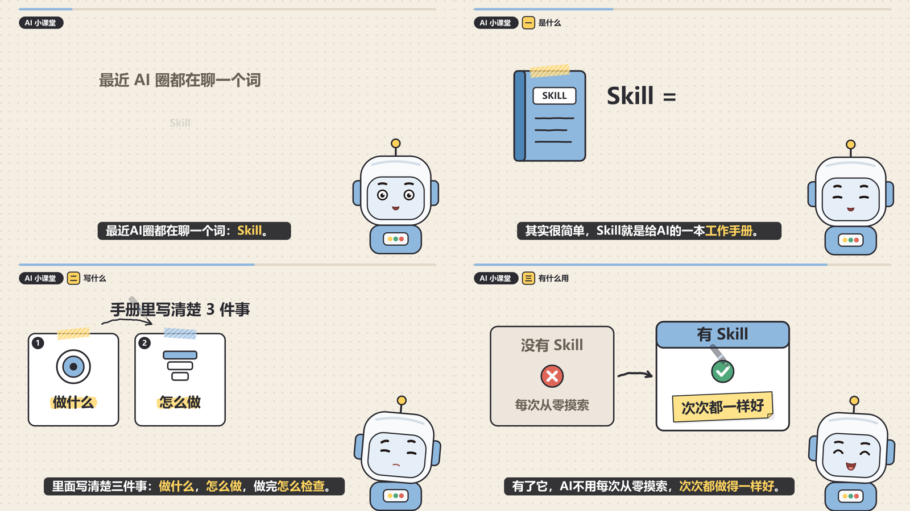

粉丝群专享 · 完全免费
用 AI 做会说话的讲解视频
你只需要做 3 件事
1装一个
AI agent
2复制
一句话
3跟着它
做完
装环境、写稿、选声音、出片，全部由 agent 带着你一步步做。不用懂编程，不用打开剪辑软件。
做出来是这样的

右下角的形象会跟着声音张嘴、眨眼、换表情。声音可以用免费 AI 配音（音色随便换），也可以用自己的。
1装一个 AI agent
AI agent 就是能直接在你电脑上干活的 AI：它能下载文件、装软件、运行程序，不只是聊天。
选一个装好、登录就行，比如字节的 Trae、腾讯的 CodeBuddy / WorkBuddy、阿里的通义灵码、Codex 等。能读写文件、能运行命令的都可以。
豆包、DeepSeek 网页版这种只能聊天的不行，因为它们没法在你电脑上操作。
2复制这句话发给它
- 在电脑上新建一个空文件夹（比如桌面上的「AI视频」），用 agent 打开这个文件夹。
- 把下面这段话复制，发给 agent：
请从 https://github.com/ttnnip/ai-explainer-video 把这个项目下载到当前文件夹，然后读「程序文件/SKILL.md」，按里面的“带新手模式”一步步带我：装好环境、先做一条示例视频，再帮我写稿、选声音、做出我自己的视频。每一步做完告诉我结果，需要我操作或确认的地方提前说。
GitHub 打不开？从群公告的网盘链接下载压缩包，解压到这个文件夹里，再把上面这段话发给 agent，它会直接用你放进来的文件。
3跟着它做完
agent 会按这个顺序带你：
| 它会做 | 你要做 |
|---|
| 检查电脑缺什么软件，帮你装好 | 它要安装、运行命令时会请你确认，点“允许” |
| 先做一条示例视频 | 打开「成片」文件夹看看效果 |
| 问你想讲什么，帮你写口播稿 | 说主题，看稿子满不满意 |
| 列出所有 AI 音色让你挑 | 挑一个；或者用自己的声音（见下方） |
| 先出几张画面检查，再出整片 | 等几分钟，去「成片」文件夹拿视频 |
第一次大约 20–30 分钟（大部分在装软件）。之后再做新视频，只要对它说：“用这个项目再做一期，主题是……”
想用自己的声音？
默认是免费 AI 配音。想换成别的声音，告诉 agent 就行，或者自己把音频放进「我的录音」文件夹：
- 剪映「文本朗读」、豆包 / 火山引擎语音合成等配音工具生成的音频（很多还能复刻你自己的声音）
- 自己录：手机就行，找个安静的地方
唯一要求：按稿子顺序，每句之间停半秒，程序靠停顿把声音和画面对上。
发抖音
成片是横屏，直接上传。背景音乐在抖音发布时从曲库里选，版权由平台解决。
+以后还能让 agent 做
直接对它说，比如：
这是我的 [2–3] 张照片，按 SKILL.md 里的方法把示例小机器人换成我的 Q 版卡通形象，一次出 4 个版本给我挑。
我想加一种新画面：[比如“三个等级从下往上依次点亮，像游戏段位”]，做好先出一张静帧给我看。
把栏目名改成 [名字]，主色换成 [颜色]。
更新一下这个项目。
做形象的经验：一次出 4 版对比比一版一版改快得多；眼睛最容易画怪，Q 版 + 简单线条眼效果最好。
常见问题
完全不会编程能做吗？
能。你要做的只有：装 agent、复制那句话、回答它的问题、点“允许”。
只有国内的 AI 能用吗？
能。整套东西不依赖海外服务。GitHub 打不开就用网盘的压缩包；只有内置 AI 配音需要联网。
agent 卡住了 / 报错了？
对它说：“继续按 SKILL.md 带我做”。还不行，把它显示的报错截图发到粉丝群。
agent 的免费额度用完了？
环境装好以后，可以用下面的“备用方法”双击出片，这一步不需要 agent。
出片好慢？
正常，每 1 秒视频大约要 10–15 秒。1 分钟的视频十几分钟。
能做竖屏吗？
目前是横屏。想要竖屏可以让 agent 改，需要重新排版。
备用方法：不用 agent，双击出片
- 双击
1-双击安装环境（只做一次；缺软件时按 Y 自动装，装完关掉窗口再双击一次）。
- 改
稿子.json：把你的稿子和下面这段要求一起发给豆包或 DeepSeek，把它返回的内容整段粘贴进去。
- 选声音：双击
3-查看AI音色 挑一个，改 稿子.json 里的 "voice"；或者把音频放进 我的录音。
- 双击
2-双击出片，成片在 成片 文件夹。
请把下面的口播稿转成 JSON，严格照这个格式，只输出 JSON，不要任何解释：
{
"channel": "你的栏目名",
"voice": "zh-CN-YunxiNeural",
"rate": "+0%",
"lines": [
{"text": "这句话的原文", "hl": ["要标黄的词"], "expr": "表情", "scene": "画面类型", "chapter": ["一", "章节名"], "data": {}}
]
}
规则：
1. 一句话一个对象，每句 10–25 个字，太长就拆开；text 必须和稿子原文一字不差。
2. hl 里的词必须在 text 里原样出现。
3. expr 只能是 happy / surprised / thinking / question / normal，多用 happy 和 surprised。
4. scene 只能是下面四种，data 按对应格式写：
- hook（开场抛关键词）：{"sub": "小标题，不超过16字", "big": "大关键词，不超过6字"}
- define（解释一个概念）：{"term": "术语", "cover": "书封面上的字，不超过6字", "prefix": "前缀，比如 AI 的", "def": "定义，不超过6字"}
- list（2到3个要点）：{"title": "标题，不超过16字", "items": [{"label": "要点，不超过5字", "icon": "图标"}]}，icon 只能是 target / steps / check / idea / chat / code
- compare（前后对比）：{"left": {"title": "旧做法", "note": "不超过7字"}, "right": {"title": "新做法", "note": "不超过7字"}, "key": "结论关键词"}
5. big、def、label、key 尽量用这句话里原有的词。
6. 第一句用 hook，不加 chapter；之后每个新段落的第一句加 chapter，比如 ["一", "是什么"]。
稿子：
[粘贴你的稿子]
Mac 用户对应的是 Mac-安装环境、Mac-查看AI音色、Mac-出片（第一次要右键 →「打开」）。
版权说明
- 免费使用、修改，可以用来做个人或商业视频；请不要打包倒卖。
- 示例形象“小方”随便用；字体用的是你电脑自带的，音效是程序合成的，背景音乐建议在抖音里加。
做出来了欢迎在群里晒！